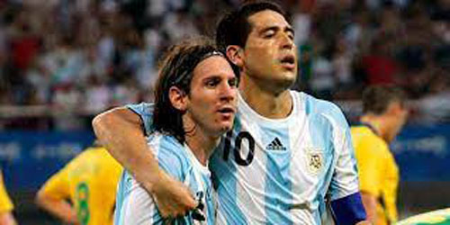

En el verano de 1996, formó parte de un seleccionado argentino sub-18 dirigido por José Pékerman que disputó en Uruguay la "Copa Punta del Este" y se proclamó campeón desempeñándose como volante central. A comienzos de 1997, Pekerman lo convocó a la selección argentina sub-20 con motivo del Campeonato Sudamericano Sub-20 realizado en Chile. Riquelme jugó los nueve partidos del certamen y marcó 3 goles, destacándose su conquista frente a Brasil en la victoria por 2-0. Argentina se consagró campeón sudamericano después de 30 años. Luego, participó de la Copa Mundial Sub-20 realizada en Malasia. El 5 de julio de 1997, Argentina se consagró campeón tras vencer a Uruguay 2-1. Riquelme fue el capitán del equipo en la final, y finalizó el torneo con 4 goles en 7 partidos, convirtiéndose en gran figura del certamen. Luego de los éxitos conseguidos en la selección sub-20, Daniel Passarella lo citó a la selección mayor para la última fecha de las Eliminatorias del Mundial de Francia 98. El partido se disputó en el estadio de Boca Juniors, y Riquelme, con 19 años, ingresó en los últimos minutos del empate 1-1 frente a la selección colombiana. Hacia mayo de 1998, Pekerman volvió a llamarlo, esta vez para formar parte del seleccionado argentino sub-21 en el torneo Jóvenes Esperanzas de Toulon en Francia. Argentina fue campeón, Riquelme disputó los cinco partidos y fue premiado por los organizadores como el Mejor Jugador del Torneo. En 2000, José Pékerman lo convocó al seleccionado sub-23 que disputaba el Torneo Preolímpico Sudamericano 2000 en Brasil. Sin embargo, el equipo conformado con la base del campeón juvenil quedó sorpresivamente fuera de los Juegos Olímpicos de Sídney 2000. Riquelme marcó un gol (de penal) en la competición.
Riquelme fue incluido en el equipo argentino de 22 hombres para la Copa América 1999 en Paraguay, vistiendo la camiseta número 22. Fue uno de los seis jugadores de Boca Juniors seleccionados en el equipo. Jugó en el partido inaugural de la fase de grupos, una victoria de 3-1 contra Ecuador el 1 de julio de 1999. Fue reemplazado en el minuto 90 por Diego Cagna. En el segundo partido, el 4 de julio de 1999, Riquelme jugó los 90 minutos en la derrota por 3-0 ante Colombia. El 7 de julio de 1999, nuevamente jugó todo el partido, último por fase de grupos, con una victoria por 2-0 sobre Uruguay. Argentina terminó en el segundo lugar de su respectivo grupo con seis puntos, enfrentando a Brasil en los cuartos de final el 11 de julio de 1999. Riquelme jugó el partido que terminó en derrota para Argentina 2-1, habiendo estado al frente 1-0 hasta el minuto 32 del partido.
Bajo la dirección del exentrenador del equipo juvenil nacional José Pékerman, Riquelme fue convocado para la Copa FIFA Confederaciones 2005 en junio, donde lució la camiseta número 8. Jugó en el partido inaugural de la fase de grupos contra Túnez el 15 de junio, abriendo el marcador al convertir un penal en el minuto 33, finalmente Argentina obtuvo una victoria de 2-1. El 18 de junio, Argentina se enfrentó a Australia. Ya ganando 1-0, Riquelme anotó un penal en el minuto 31 para darle a Argentina una ventaja de 2-0 y luego ganó 4-2. En el último encuentro por la fase de grupos, ante el anfitrión Alemania el 21 de junio, Riquelme anotó un gol en el minuto 33 para Argentina apenas cuatro minutos después de que Alemania tomara la delantera. El encuentro terminó en 2-2. Argentina obtuvo siete puntos, junto con Alemania y avanzó a la siguiente ronda del torneo.
El 26 de junio, Argentina se enfrentó a México en la semifinal. Después del tiempo extra, el partido quedó empatado a 1-1 y condujo a una tanda de penales. Riquelme convirtió el primer penal de Argentina, ganaron 6 a 5. El 29 de junio, Argentina se enfrentó a Brasil en la final. Jugó los 90 minutos en donde Argentina fue derrotada por 4-1 en el Commerzbank-Arena en Fráncfort. Riquelme fue galardonado como el ganador del Balón de Plata, siendo el segundo mejor jugador en el torneo.
Pékerman le asigna por primera vez a Riquelme la histórica camiseta número 10 de la selección (hasta entonces usaba la N.º 8). Desde el inicio de su ciclo, Pekerman confió en él como eje del equipo nacional. En los partidos de la fase de grupos Argentina finalizó en primer lugar. En el debut, se impuso 2-1 a Costa de Marfil. El 14 de junio, la selección jugó su mejor partido y venció con un categórico 6-0 a Serbia y Montenegro. El último partido de la fase de grupos fue un 0-0 ante Países Bajos. En octavos de final, Argentina se enfrentó a México y ganó en tiempo suplementario 2-1. Frente al equipo anfitrión, Alemania, tuvo total participación en la conquista del gol argentino: ejecutó un centro preciso para que Roberto Ayala abriese el marcador, incluso el defensor argentino festejo el gol señalando a Riquelme y gritándole "es tuyo, es tuyo". En el segundo tiempo, Pekerman decidió reemplazarlo y una vez fuera, a los pocos minutos empató Alemania. Luego de la paridad en el tiempo suplementario, el equipo local se impuso por penales 4-2 y dejó fuera de la competencia a los argentinos.
Riquelme cerró su participación en el Mundial con 5 asistencias servidas, una a Saviola y otra tras un córner que derivo en el gol de Ayala y ningún gol convertido.
En septiembre de 2006 fue convocado por el nuevo entrenador de la selección nacional Alfio Basile, quién lo nombró capitán del equipo. Con pocos entrenamientos, el equipo enfrentó a Brasil y fue goleado 0-3. Nuevamente, Riquelme recibió gran parte de las críticas y responsabilidades por la derrota. En Buenos Aires, esto afectó la salud de su madre -internada en dos oportunidades-, motivo por el cual, tras hablar con Basile, dio a conocer públicamente su renuncia a la selección argentina en un reportaje por TV.
En la madrugada del día siguiente a conseguir la Copa Libertadores 2007 con Boca Juniors, regresó a Buenos Aires y partió con la selección a disputar la Copa América 2007 en Venezuela. Pese a no tener más que una semana de entrenamiento con el resto del equipo, tuvo una aceptable actuación en el debut ante Estados Unidos, triunfo por 4-1. Frente a Colombia marcó un gol de cabeza y otro de tiro libre en la victoria argentina 4-2. El 8 de julio de 2007, en el 4-0 frente a Perú nuevamente marcó dos goles (uno con cada pie) y asistió a Lionel Messi con un gran pase "entre líneas". Ya en las semifinales del torneo, enfrentando a México, asistió en una jugada preparada a Gabriel Heinze y ejecutó con clase un penal (con un suave disparo por encima del arquero) en el definitivo 3-0.
A pesar del buen nivel desplegado a lo largo del certamen, Argentina debió conformarse con el subcampeonato ya que fue derrotado por 0-3 en la final ante Brasil. Riquelme fue el goleador del seleccionado argentino, marcando un tanto menos que Robinho, quien a la postre resultó el artillero del torneo.
En marzo de 2009, en una entrevista que brindó por televisión en Canal 13 de Argentina, Juan Román Riquelme anunció su renuncia definitiva e indeclinable a la Selección Argentina, dirigida por Diego Armando Maradona, por diferencias personales con el técnico. La razón que se supone fue un comentario dicho por el director técnico acerca de su nivel en dos partidos que jugó con Boca Juniors.
 PÁGINA PRINCIPAL GALERÍA POLÍTICA EN BOCA TRAYECTORIA TÍTULOS BIOGRAFÍA FORMULARIO CONTACTO ARP CONTACTO AGUS